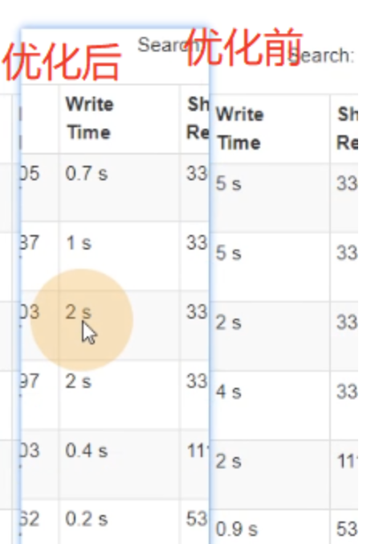

Map端优化
Map端聚合
map-side 预聚合，就是在每个节点本地对相同的 key 进行一次聚合操作，类似于MapReduce 中的本地 combiner。map-side 预聚合之后，每个节点本地就只会有一条相同的key，因为多条相同的 key 都被聚合起来了。其他节点在拉取所有节点上的相同 key 时，就会大大减少需要拉取的数据数量，从而也就减少了磁盘 IO 以及网络传输开销。
RDD方面
reduceByKey或者aggregateByKey算子代替groupByKey，这两种算子都可以提前使用预聚合，而groupByKey不会预聚合，这样的话数据量非常大。
SparkSQL方面
在Spark Web UI也可以看到它会经过HashAggregate，本身就使用本地预聚合和全局聚合
读取小文件优化
读取数据时有很多小文件，造成查询性能损耗，因为大量的数据分片信息以及Task元信息也会给Spark Driver的内存造成压力。
在这里可以调两个参数：
|
|
例子
|
|
在调整前，这里共有38个小文件

执行完毕后，发现Task数量为32个，证明有一定的文件合并在一起了。
源码理解
DataSourceScanExec.createNonBucketedReadRDD()
- 切片大小= Math.min(defaultMaxSplitBytes, Math.max(openCostInBytes, bytesPerCore))计算 totalBytes 的时候，每个文件都要加上一个 open 开销defaultParallelism 就是 RDD 的并行度
- 当（文件 1 大小+ openCostInBytes）+（文件 2 大小+ openCostInBytes）+…+（文件n-1 大小+ openCostInBytes）+ 文件 n <= maxPartitionBytes 时，n 个文件可以读入同一个分区，即满足：N 个小文件总大小 + （N-1）*openCostInBytes <= maxPartitionBytes的话。
这里最好就是将openCostInBytes设置成接近小文件的大小，这是最合适的。因为太大的话，不会合并很多小文件，所以这里的开销不适合设置得太大，最好设置成小文件的大小！
增大map溢写时输出流Buffer
- map 端 Shuffle Write 有一个缓冲区，初始阈值 5m，超过会尝试增加到 2*当前使用内存。如果申请不到内存，则进行溢写。这个参数是 internal，指定无效。也就是说资源足够会自动扩容，所以不需要我们去设置。
- 溢写时使用输出流缓冲区默认 32k，这些缓冲区减少了磁盘搜索和系统调用次数，适当提高可以提升溢写效率。
- Shuffle 文件涉及到序列化，是采取批的方式读写，默认按照每批次 1 万条去读写。设置得太低会导致在序列化时过度复制，因为一些序列化器通过增长和复制的方式来翻倍内部数据结构。这个参数是 internal，指定无效。 综合以上分析，我们可以调整的就是输出缓冲区的大小
示例
|
|
上面的代码设置了set("spark.shuffle.file.buffer", "64")，表示提高溢写时输出流默认缓冲区，就是优化Shuffle Write位置，优化位置如下图红色框框所示：
优化前后对比，如下图所示，可以看到Shuffle Write前后优化巨大。
Reduce端优化
合理设置Reduce数
过多的cpu资源出现空转浪费，过少影响任务性能。
设置建议：并行度设置为并发度的2-3倍，这样的性能是最优的。比如分配的cpu核心数为12cores，那么并行度就要设置为24-36，这样的性能经过测试是最好的。
输出产生小文件优化
1. Join 后的结果插入新表
join 结果插入新表，生成的文件数等于 shuffle 并行度，默认就是200 份文件插入到hdfs 上。
解决方式：
-
可以在插入表数据前进行缩小分区操作来解决小文件过多问题，如 coalesce、repartition 算子。
在shuffle完后合并分区
.coaleasce(6)，去HDFS WEB UI可以看到文件数就只有6个了！这样的好处不会影响shuffle的执行！ -
调整 shuffle 并行度。
.set("spark.sql.shuffle.partitions", "36")，设置了这个的时候，去HDFS WEB UI可以看到文件数就只有36个了！
2. 动态分区插入数据
-
没有 Shuffle 的情况下。最差的情况下，每个 Task 中都有表各个分区的记录，那文件数最终文件数将达到 Task 数量 * 表分区数。这种情况下是极易产生小文件的。INSERT overwrite table A partition ( aa )SELECT * FROM B;
-
有 Shuffle 的情况下，上面的 Task 数量 就变成了 spark.sql.shuffle.partitions（默认值200）。那么最差情况就会有 spark.sql.shuffle.partitions * 表分区数。当 spark.sql.shuffle.partitions 设 置 过 大 时 ， 小 文 件 问 题 就 产 生 了 ； 当spark.sql.shuffle.partitions 设置过小时，任务的并行度就下降了，性能随之受到影响。最理想的情况是根据分区字段进行 shuffle，在上面的 sql 中加上 distribute by aa。把同一分区的记录都哈希到同一个分区中去，由一个 Spark 的 Task 进行写入，这样的话只会产生 N 个文件, 但是这种情况下也容易出现数据倾斜的问题。
-
解决思路：结合解决倾斜的思路，在确定哪个分区键倾斜的情况下，将倾斜的分区键单独拎出来：将入库的 SQL 拆成（where 分区 != 倾斜分区键 ）和 （where 分区 = 倾斜分区键） 几个部分，非倾斜分区键的部分正常distribute by分区字段，倾斜分区键的部分 distribute by随机数，sql 如下：
1 2 3 4 5 6 7 8 9 10 11//1.非倾斜键部分 INSERT overwrite table A partition ( aa ) SELECT * FROM B where aa != 大 key distribute by aa; //2.倾斜键部分 INSERT overwrite table A partition ( aa ) SELECT * FROM B where aa = 大 key distribute by cast(rand() * 5 as int); -- 这里实现了随机打散成5分，5个文件样例
1 2 3 4 5 6 7 8 9 10 11 12 13 14 15 16 17// TODO 非倾斜分区写入 sparkSession.sql( """ |insert overwrite sparktuning.dynamic_csc partition(dt,dn) |select * from sparktuning.course_shopping_cart |where dt!='20190722' and dn!='webA' |distribute by dt,dn """.stripMargin) // TODO 倾斜分区打散写入 sparkSession.sql( """ |insert overwrite sparktuning.dynamic_csc partition(dt,dn) |select * from sparktuning.course_shopping_cart |where dt='20190722' and dn='webA' |distribute by cast(rand() * 5 as int) """.stripMargin)
这里的代码中，对dt=20190722和dn=webA的数据进行打散，可以去HDFS WEB UI中看到了dynamic_csc这个表中 dt='20190722' and dn='webA'里面只有5个文件。那么其他分区的话，因为没有做随机打散，所以每个分区 就仅1个文件的了啊。
增大 reduce 缓冲区，减少拉取次数
- Spark Shuffle 过程中，shuffle reduce task 的 buffer 缓冲区大小决定了 reduce task 每次能够缓冲的数据量，也就是每次能够拉取的数据量，如果内存资源较为充足，适当增加拉取数据缓冲区的大小，可以减少拉取数据的次数，也就可以减少网络传输的次数，进而提升性能。
- reduce 端数据拉取缓冲区的大小可以通过 spark.reducer.maxSizeInFlight 参数进行设置，默认为 48MB。
源码：BlockStoreShuffleReader.read()
|
|
SparkEnv.get.conf.get(config.REDUCER_MAX_SIZE_IN_FLIGHT) * 1024 * 这里表示了默认值为48MB，如果作业可用的内存资源较为充足，可以适当增加这个参数的大小（如96m），从而减少拉取数据的次数，也就可以减少网络传输的次数，进而提升性能。在实践中发现，合理调节该参数，性能会有**1%～5%**的提升。
调节reduce端拉取数据重试次数
- Spark Shuffle 过程中，reduce task 拉取属于自己的数据时，如果因为网络异常等原因导致失败会自动进行重试。对于那些包含了特别耗时的 shuffle 操作的作业，建议增加重试最大次数（比如 60 次），以避免由于 JVM 的 full gc 或者网络不稳定等因素导致的数据拉取失败。在实践中发现，对于针对超大数据量（数十亿~上百亿）的 shuffle 过程，调节该参数可以大幅度提升稳定性。
- reduce 端拉取数据重试次数可以通过 spark.shuffle.io.maxRetries 参数进行设置，该参数就代表了可以重试的最大次数。如果在指定次数之内拉取还是没有成功，就可能会导致作业执行失败，默认为 3：
调节reduce端拉取数据等待间隔
- Spark Shuffle 过程中，reduce task 拉取属于自己的数据时，如果因为网络异常等原因导致失败会自动进行重试，在一次失败后，会等待一定的时间间隔再进行重试，可以通过加大间隔时长（比如60s），以增加 shuffle 操作的稳定性。
- reduce 端拉取数据等待间隔可以通过spark.shuffle.io.retryWait参数进行设置，默认值 为5s。
样例
|
|
.set(“spark.reducer.maxSizeInFlight”, “96m”)
.set(“spark.shuffle.io.maxRetries”, “6”)
.set(“spark.shuffle.io.retryWait”, “60s”)
reduce端缓冲区对比
当缓冲区大小设置为1mb时对比当缓冲区大小设置为96mb的对比如下：

可以看到，调整缓冲区为96mb的时候，带来的shuffle read时间确实有改善，但改善的时间并不大。
合理利用 bypass
当 ShuffleManager 为 SortShuffleManager 时，如果 shuffle read task 的数量小于这个阈值（默认是 200）且不需要 map 端进行合并操作，则 shuffle write 过程中不会进行排序操作，使BypassMergeSortShuffleWriter 去写数据，但是最后会将每个 task 产生的所有临时磁盘文件都合并成一个文件，并会创建单独的索引文件。
当你使用 SortShuffleManager 时，如果确实不需要排序操作，那么建议将这个参数调大一些，大于 shuffle read task 的数量。那么此时就会自动启用 bypass 机制，map-side 就不会进行排序了，减少了排序的性能开销。但是这种方式下，依然会产生大量的磁盘文件，因此 shuffle write 性能有待提高。
源码:SortShuffleManager.registerShuffle()
|
|
bypassMergeThreshold的默认值就是200
SortShuffleManager.getWriter():
|
|
样例：
|
|
在这个样例中看到，当bypassMergeThreshold设置为30时，分区设为36时，由于里面需要 排序，而分区数减少，则每个分区排序时耗费的内存空间增多，随后造成了Task失败。而当走bypass的时候，由于不需要排序，反而速度更快，任务也没有失败了。
整体优化
调节数据本地化等待时长
在 Spark 项目开发阶段，可以使用 client 模式对程序进行测试，此时，可以在本地看到比较全的日志信息（WEB UI也可以看的），日志信息中有明确的 Task 数据本地化的级别，如果大部分都是PROCESS_LOCAL、NODE_LOCAL，那么就无需进行调节，但是如果发现很多的级别都是RACK_LOCAL、ANY，那么需要对本地化的等待时长进行调节，应该是反复调节，每次调节完以后，再来运行观察日志，看看大部分的 task 的本地化级别有没有提升；看看，整个spark 作业的运行时间有没有缩短。
注意过犹不及，不要将本地化等待时长延长地过长，导致因为大量的等待时长，使得Spark 作业的运行时间反而增加了。
下面几个参数，默认都是 3s，可以改成如下：
|
|
使用堆外内存
堆外内存参数
讲到堆外内存，就必须去提一个东西，那就是去 yarn 申请资源的单位，容器。Spark on yarn 模式，一个容器到底申请多少内存资源。一个容器最多可以申请多大资源，是由 yarn 参数 yarn.scheduler.maximum-allocation-mb 决定， 需要满足：
spark.executor.memoryOverhead + spark.executor.memory + spark.memory.offHeap.size≤ yarn.scheduler.maximum-allocation-mb
参数解释：
- spark.executor.memory：提交任务时指定的堆内内存。
- spark.executor.memoryOverhead：堆外内存参数，内存额外开销。默认开启，默认值为 spark.executor.memory*0.1 并且会与最小值 384mb 做对比，取最大值。所以 spark on yarn 任务堆内内存申请 1 个 g，而实际去 yarn 申请的内存大于 1 个 g 的原因。
- spark.memory.offHeap.size ： 堆 外 内 存 参 数 ， spark 中 默 认 关 闭 ， 需 要 将spark.memory.enable.offheap.enable 参数设置为 true。
测试申请容器上限：
yarn.scheduler.maximum-allocation-mb 修改为 7G，将三个参数设为如下，大于 7G，会报错：
|
|
将 spark.memory.offHeap.size 修改为 1g 后再次提交，没报错：
|
|
使用堆外缓存
使用堆外内存可以减轻垃圾回收的工作，也加快了复制的速度。当需要缓存非常大的数据量时，虚拟机将承受 非常大的 GC 压力，因为虚拟机必须检每个对象是否可以收集并必须访问所有内存页。本地缓存是最快的，但 会给虚拟机带来GC 压力，所以，当你需要处理非常多 GB 的数据量时可以考虑使用堆外内存来进行优化，因 为这不会给 Java 垃圾收集器带来任何压力。让 JAVA GC 为应用程序完成工作，缓存操作交给堆外.
|
|
调节连接等待时长
在 Spark 作业运行过程中，Executor 优先从自己本地关联的 BlockManager 中获取某份数据，如果本地 BlockManager 没有的话，会通过 TransferService 远程连接其他节点上Executor 的 BlockManager 来获取数据。
如果 task 在运行过程中创建大量对象或者创建的对象较大，会占用大量的内存，这回导致频繁的垃圾回收，但是垃圾回收会导致工作现场全部停止，也就是说，垃圾回收一旦执行，Spark 的 Executor 进程就会停止工作，无法提供相应，此时，由于没有响应，无法建立网络连接，会导致网络连接超时。
在生产环境下，有时会遇到 file not found、file lost 这类错误，在这种情况下，很有可能是 Executor 的BlockManager 在拉取数据的时候，无法建立连接，然后超过默认的连接等待时长 120s 后，宣告数据拉取失败，如果反复尝试都拉取不到数据，可能会导致 Spark 作业的崩溃。这种情况也可能会导致 DAGScheduler 反复提交几次 stage，TaskScheduler 反复提交几次 task，大大延长了我们的 Spark 作业的运行时间。为了避免长时间暂停(如 GC)导致的超时，可以考虑调节连接的超时时长，连接等待时长需要在 spark-submit 脚本中进行设置，设置方式可以在提交时指定：–conf spark.core.connection.ack.wait.timeout=300s
调节连接等待时长后，通常可以避免部分的 XX 文件拉取失败、XX 文件 lost 等报错。
总结
这一章结主要讲了Job优化，总体包括了Map端优化、Reduce端优化、整体优化。
Map端优化：
- map端聚合：就是提前将数据在map端聚合起来，减少传输量和后续程序处理量。比如可以用RDD算子中的reduceByKey、aggregateByKey来代替groupbyKey；在SparkSQL中，由于程序默认利用HashAggregate，这也是会提前聚合的。
- 读取小文件优化：读取数据时有很多小文件，造成查询性能损耗，因为大量的数据分片信息以及Task元信息也会给Spark Driver的内存造成压力。经过调节这个参数，可以合并一定数量的小文件，减少查询性能开销。最好就是将openCostInBytes设置成接近小文件的大小，这是最合适的。因为太大的话，不会合并很多小文件，所以这里的开销不适合设置得太大，最好设置成小文件的大小！
- **增大map溢写时输出流Buffer **：溢写时使用输出流缓冲区默认 32k，这些缓冲区减少了磁盘搜索和系统调用次数，适当提高可以提升溢写效率。调整参数是：spark.shuffle.file.buffer（默认32kb）。
Reduce端聚合：
- 合理设置Reduce数：即合理设置并行数，将并行数设置为分配核的2-3倍性能比较优
- 输出产生小文件优化：
- 过多小文件会导致性能降低。 使用coleasce或repartition算子来手动操作输出小文件数量，这样不会调整shuffle的执行；在sparkConf中调整分区数也是可以的。
- 动态分区插入数据：没有shffle时，小文件数是 Task 数量 * 表分区数。有shuffle时，小文件数是 spark.sql.shuffle.partitions * 表分区数。那么优化操作就是，在sql中添加distribute by aaa，这样会使文件数跟aaa的数量有关系，可以减少分区数。但这样会导致有些大key造成数据倾斜，可以在数据倾斜的key中使用distribute by cast(rand() * 5 as int)来将这个大key分开几个文件解决这个问题。
- 增大 reduce 缓冲区，减少拉取次数：reduce 端数据拉取缓冲区的大小可以通过 spark.reducer.maxSizeInFlight 参数进行设置，默认为 48MB。这样增大了缓冲区，可以减少拉取的次数，从而提高性能。
- 调节reduce端拉取数据重试次数：educe 端拉取数据重试次数可以通过 spark.shuffle.io.maxRetries 参数进行设置，该参数就代表了可以重试的最大次数。如果在指定次数之内拉取还是没有成功，就可能会导致作业执行失败，默认为 3。
- 调节reduce端拉取数据等待间隔：通过spark.shuffle.io.retryWait参数进行设置，默认值 为5s。提高这个可以提高稳定性。
- 合理利用 bypass：在不需要sort的情况下，可以合理利用bypass操作，bypass操作比普通的sortmerge操作减少了sort的过程，提高了性能，但是最后会将每个 task 产生的所有临时磁盘文件都合并成一个文件，并会创建单独的索引文件。通过spark.shuffle.sort.bypassMergeThreshold（默认200）以调节这个参数。
整体优化:
- 调节数据本地化等待时长：适当调高这个参数，让程序优先等待数据本地级别高的task资源，减少跨节点、跨机架这样的事件发生，从而可以提升性能。
- 使用堆外内存：使用堆外内存可以减轻垃圾回收的工作，也加快了复制的速度。
- 调节连接等待时长：在 Spark 作业运行过程中，Executor 优先从自己本地关联的 BlockManager 中获取某份数据，如果本地 BlockManager 没有的话，会通过 TransferService 远程连接其他节点上Executor 的 BlockManager 来获取数据。
如果 task 在运行过程中创建大量对象或者创建的对象较大，会占用大量的内存，这回导致频繁的垃圾回收，但是垃圾回收会导致工作现场全部停止，也就是说，垃圾回收一旦执行，Spark 的 Executor 进程就会停止工作，无法提供相应，此时，由于没有响应，无法建立网络连接，会导致网络连接超时。
这时候可以通过调节连接等待时长spark.core.connection.ack.wait.timeout(默认120s)，避免GC过长导致XX 文件拉取失败、XX 文件 lost 等报错的情况发生。